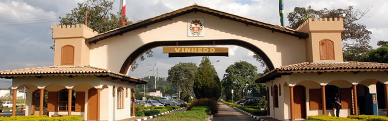

O Estado de São Paulo
Com 46,2 milhões de habitantes, ou cerca de 22% da população brasileira, é o estado mais populoso do Brasil, a terceira unidade política mais populosa da América do Sul (superado pela Colômbia e pelo restante da federação brasileira) e a subdivisão nacional mais populosa do continente americano. A população paulista é uma das mais diversificadas do país e descende principalmente de italianos, que começaram a emigrar para o país no fim do século XIX, de portugueses, que colonizaram o Brasil e instalaram os primeiros assentamentos europeus na região, de povos ameríndios nativos, de povos africanos e de migrantes de outras regiões do Brasil. Outras grandes correntes imigratórias, como de árabes, alemães, chineses, espanhóis e japoneses, também tiveram presença significativa na composição étnica da população local. Leia Mais sobre o estado de São Paulo.

10° - Ilha Solteira

Ilha Solteira é um município brasileiro no interior do estado de São Paulo. Localizando-se a uma latitude 20º25'58" sul e a uma longitude 51º20'33" oeste, estando a uma altitude de aproximadamente 335 metros
Tal localização, próximo ao encontro dos rios Tietê e Paraná e à divisa com o Estado do Mato Grosso do Sul, é uma das mais importantes da hidrovia Tietê-Paraná, principal meio de transporte do Mercosul.
Sua população estimada em 2018 era de 26 582 habitantes. Possui uma área de 659,4 km².
9° -Santana de Parnaíba
Em 1580, Susana Dias, neta do cacique Tibiriçá, juntamente com seu filho, Capitão André Fernandes, fundou uma fazenda à beira do Rio Anhembi (atual Rio Tietê), a oeste de São Paulo, próximo à cachoeira denominada pelos indígenas como "Parnaíba" (lugar de muitas ilhas).
Devido a sua posição estratégica no vale do Rio Tietê, tornou-se ponto de partida das bandeiras que seguiam rumo ao Oeste Paulista e ao Mato Grosso. Em 1625, o povoado foi elevado à condição de vila, com a correspondente criação do município.
No século XVIII, a vila entrou em decadência devido ao fim das bandeiras. O isolamento geográfico da vila, provocado pelas quedas de água do Rio Tietê e pelo relevo acidentado de seu território, fizeram com que a vila não figurasse nas rotas de comércio e colonização que ligavam São Paulo às nascentes cidades de Jundiaí, Sorocaba e Itu.
8° - Santo André
Santo André é um município brasileiro da Região do Grande ABC, localizado na Zona Sudeste da Grande São Paulo, parte da Região Metropolitana de São Paulo, em conformidade com a lei estadual nº 1.139, de 16 de junho de 2011 e, consequentemente, com o Plano de Desenvolvimento Urbano Integrado da Região Metropolitana de São Paulo (PDUI).
Sua população estimada para 1.º de julho de 2020 era de 721 368 habitantes, ocupando uma área de 175,782km².
Santo André é a décima quinta cidade brasileira mais desenvolvida, e a oitava cidade mais desenvolvida do estado de São Paulo, segundo a ONU. É também a quinta melhor cidade do país onde criar filhos.
7° - Araraquara
Araraquara é um município no interior do estado de São Paulo, no Brasil. O município é formado pela sede e pelos distritos de Bueno de Andrada e Vila Xavier. Sua população, conforme estimativas do IBGE de 2020, era de 238 339, correspondendo em uma densidade populacional de 235,2 habitantes/km².
Com uma área territorial de 1.003,625 km² é o 38º maior município do estado e o 1402º do país. Localizada a 21º47'40" de latitude sul e 48º10'32" de longitude oeste, a uma altitude de 664 metros, Araraquara situa-se a 43 quilômetros do centro geográfico (Obelisco) do Estado de São Paulo, e a 270 quilômetros da capital estadual. É o 37º município mais populoso do estado e o 128º mais populoso do país. Encontra-se conurbado com Américo Brasiliense na área urbana contínua. Araraquara é um polo regional, sediando a Região Geográfica Intermediária (26 municípios) e Região Geográfica Imediata (17 municípios) ao seu entorno. O estudo mais recente do IBGE sobre Regiões de Influência das Cidades - REGIC (2018), classificou a cidade como Capital Regional C, sediando o Arranjo Populacional de Araraquara e relacionando-a diretamente ao Arranjo Populacional de Ribeirão Preto.
O município de Araraquara sedia os campi da Universidade Estadual Paulista (Unesp), da Fundação Estadual Paula Souza (FATEC) e do Instituto Federal de São Paulo (IFSP), todas instituições públicas de ensino superior, além de possuir outras, de caráter privado, como a Universidade de Araraquara UNIARA, a UNIP, as Faculdades Integradas de Araraquara Logatti e a UNIESP. O Índice de Desenvolvimento Humano Municipal (IDH-M) de Araraquara, considerado elevado pelo Programa das Nações Unidas para o Desenvolvimento (PNUD), é de 0,815, sendo o 14° maior do Brasil. Em 2007, foi a cidade brasileira melhor qualificada quanto ao Índice FIRJAN de Desenvolvimento Municipal, que usa critérios de renda, educação e saúde.
6° - Vinhedo
A região do planalto paulista era habitada por diversos grupos indígenas, alguns, provenientes do litoral, que buscavam refúgio das guerras e da escravidão movidas pelos colonizadores ibéricos. Outros, como grupos de Tupi-Guaranys e Jês (como os Kaigang e os Kayapó meridionais), moravam na região desde antes da colonização.
Com a chegada de europeus ao continente sul-americano, a região foi percorrida pelas Bandeiras, que ocupavam terras consideradas inexploradas e caçavam índios para trabalho escravo, bem como buscavam recursos naturais como madeiras nobres, ouro e pedras preciosas, durante o século XVII. Para isso, as tribos indígenas foram dizimadas ou expulsas da região. Escravos africanos foram introduzidos para ajudar forçadamente nas Bandeiras ou trabalhar nas recém-criadas lavouras de subsistência que iam se formando no caminho para Goyáz.
No fim do século XIX fazendas cafeicultoras instalam-se na região norte do município de Jundiaí – muitas delas aproveitando antigas fazendas que desde o século XVIII produziam açúcar e aguardente. Todo o trabalho era realizado por escravos negros. Trabalhadores brancos, principalmente imigrantes europeus patrocinados pelo governo e por fazendeiros, ocuparam as vagas deixadas pelos escravos após a abolição.
5° - Valinhos

O primeiro marco na história de Valinhos registra a concessão de uma sesmaria a Alexandre Simões Vieira no dia 2 de dezembro de 1732, que foi outorgada pelo presidente de São Paulo, Antônio Luís de Távora, o conde de Sarzedas. Conta a história que Alexandre Simões Vieira abriu um caminho novo de Jundiaí aos Goiases, tendo como paragem um ribeirão chamado Pinheiros. Este trajeto novo tinha por objetivo substituir o então caminho da Vila de Jundiaí até a paragem chamada Campinas do Mato Grosso, por este ser ruim e muito longo. Até então, o caminho era conhecido como Estrada de Goiás e passou a ser bastante utilizado a partir de 1722, com a descoberta de ouro em Goiás.
O Pouso de Pinheiros, pelos registros históricos, foi o primeiro marco oficial de uma área dentro do atual município de Valinhos e teve existência quase centenária. Segundo o professor Mário Pires, em seu livro “Valinhos: Tempo e Espaço”, a localização deste Pouso provavelmente é o atual bairro Capuava, o qual o historiador considera a “célula mater” de Valinhos.
No período em que a sesmaria foi outorgada, Campinas ainda era chamada de bairro de Mato Grosso das Campinas, pertencente ao município de Jundiaí. No ano de 1741, Francisco Barreto Leme, juntamente com sua família, fixou-se na região e deu início a um povoado. Em 1774, o então bairro de Jundiaí foi elevado à categoria de Distrito e, em 16 de novembro de 1797, Campinas tornou-se município.
4° - Jundiaí

A região de Jundiaí, até início do século XVII, era habitada exclusivamente por povos indígenas; alguns grupos viviam em clãs familiares, caracterizando-se pelo nomadismo, e outros eram sedentários. Tupis, se dedicavam à produção de milho e de mandioca. Eram povos guerreiros, bons caçadores e pescadores, organizando-se em aldeias compostas por cabanas circulares feitas de tronco e cobertas de palha. Parte da cultura indígena foi incorporada pelos brancos colonizadores, como a utilização de queimadas na lavoura.
O início da colonização da região do "Mato Grosso de Jundiaí" ainda é algo que possui controvérsias entre os historiadores e há várias versões, por causa da falta de documentos de fonte primária que comprovem tais versões. Tradicionalmente, diz-se que o povoamento do Mato Grosso de Jundiaí se iniciou próximo ao Rio Jundiaí, com a chegada, em 1615, da Rafael de Oliveira, sua mulher Petronilha Rodrigues Antunes e suas famílias, fugindo da justiça pelo fato de Rafael ter cometido o crime de apresamento de índios. No entanto, diz o historiador Afonso de Taunay foi perdoado, graças à sua participação no combate aos flamengos.
Outros colonizadores foram chegando na região de Jundiaí com o passar do tempo, afugentando os grupos indígenas, que se embrenharam na mata
3° - Santos

Verificam-se relatos a respeito da Ilha de São Vicente apenas dois anos após o descobrimento oficial do Brasil, em 1502, com a expedição de Américo Vespúcio para o reconhecimento da costa brasileira. Ao passar pela ilha dantes conhecida pelos indígenas sob o nome de Goiaó (ou Guaiaó), a expedição decidiu dar-lhe o nome do santo do dia, São Vicente.
A coroa portuguesa interessou-se pouco pela região nos trinta anos que se seguiram à expedição. Durante este tempo, vários corsários e piratas acudiam à região em busca do pau-brasil, madeira nobre que era objeto de cobiça na época, largamente explorada pelos portugueses na Mata Atlântica abundante da região.
No entanto, em 1531, devido à decadência dos negócios da coroa portuguesa na Índia, o Brasil volta ao centro das atenções. Uma esquadra de demarcação e posse de territórios é enviada pelo monarca D. João III à Ilha de São Vicente. O chefe da esquadra, o navegador Martim Afonso de Sousa, encontra na entrada do atual estuário de Santos (Ponta da Praia) um pequeno povoado e um atracadouro, conhecido como Porto de São Vicente. Um dos degredados trazidos pela expedição de Américo Vespúcio, Cosme Fernandes, fundara aí essa colônia, e prosperava graças ao comércio com os indígenas. A vila de São Vicente também refletia a prosperidade das atividades econômicas de Fernandes.
2° - Águas de São Pedro
Embora não seja possível determinar precisamente quais povos viveram na região antes dos descobrimentos ibéricos (Descobrimento do Brasil), até 1800 a região do município de São Pedro não fora colonizada. Assim como na maioria dos municípios do interior de São Paulo, os bandeirantes procuravam pedras preciosas, em especial ouro, abrindo pela mata fechada diversos caminhos e rotas. Uma destas rotas, chamada de Caminho do Picadão. partia de Itu, passava por Piracicaba e avançava na direção dos sertões de Araraquara. Durante muitos anos, muitas propriedades agrícolas foram se formando na região, até que em 1883, São Pedro desvinculou-se de Piracicaba e tornou-se politicamente independente.
A economia, nesta época, passou a ser baseada na cultura do café, quando muitas famílias italianas se estabeleceram nestas regiões para trabalhar sob contrato de parceria em substituição ao trabalho escravo. Nesta condição, o imigrante italiano Ângelo Franzin chegou ao Brasil em 1887, indo trabalhar na fazenda Recreio, de propriedade de João Rezende da Cruz e apenas um ano depois administrava outras fazendas como Santa Rita, Santa Eulália e Rosário.
Após muitos anos de trabalho, em acordo com seu irmão Jácomo, adquiriu terras e decidiu também praticar a cafeicultura. As primeiras terras adquiridas foram as fazendas Palmeiras e Limoeiro, seguidas das terras da Floresta Escura, Gonçalves, Tuncum e Araquá, além de casas, terrenos e mais duas máquinas de beneficiar café.
1° - São Caetano do Sul
Segundo o sociólogo e historiador José de Souza Martins, da Universidade de São Paulo, a região em que hoje se situa o município de São Caetano do Sul é ocupada desde o século XVI, quando era conhecida como Tijucuçu. Foi área de fazendas de moradores do antigo povoado de Santo André da Borda do Campo, onde vivia João Ramalho e que depois, em 1553, se transformaria em vila pelo primeiro governador-geral do Brasil Tomé de Sousa.
Sua população e seu predicamento de vila (município) foram transferidos para o povoado jesuítico de São Paulo de Piratininga em 1560 a mando de Mem de Sá
A partir do começo do século XVII, fazendeiros e sitiantes da hoje região do ABC começaram a migrar para o Vale do Paraíba, onde surgiriam as vilas de Taubaté e de Santana das Cruzes de Mogi (Mogi das Cruzes). Dois desses fazendeiros e criadores de gado doaram suas terras para o Mosteiro de São Bento da vila de São Paulo, um onde viria a ser São Bernardo e outro onde viria a ser São Caetano. Nesta última região, o doador foi o capitão Duarte Machado, em 1631, que participara da bandeira de Nicolau Barreto aos sertões dos índios temiminós, em 1602, para captura e escravização de indígenas. Foi ele também membro da Câmara da Vila de Piratininga, onde exerceu a função de almotacel.